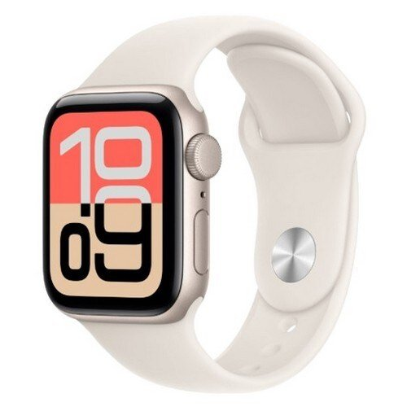
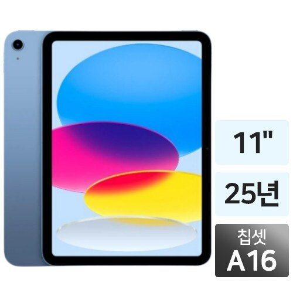

애플 Apple
US · 미국 · 1976년 창업, 아이폰·맥 생태계 · 대표 제품: 아이폰, 아이패드, 애플워치, 에어팟
추천 제품 5종 2026.11.25 WED · No.004 기준
 애플 아이폰 17 256GB 자급제1,390,000원스마트폰 · 쿠팡 리뷰 16,064 · 평점 5.0 · 소싱 점수 3.5
애플 아이폰 17 256GB 자급제1,390,000원스마트폰 · 쿠팡 리뷰 16,064 · 평점 5.0 · 소싱 점수 3.5
애플워치 SE3 40mm GPS350,550원워치 · 쿠팡 리뷰 877 · 평점 5.0 · 소싱 점수 3.5 APPLE 에어팟 프로3296,000원이어폰 · 정가 대비 19%↓ · 쿠팡 리뷰 23,490 · 소싱 점수 3.5
APPLE 에어팟 프로3296,000원이어폰 · 정가 대비 19%↓ · 쿠팡 리뷰 23,490 · 소싱 점수 3.5
APPLE 2025 iPad A16 11세대 128GB628,000원태블릿 · 정가 대비 16%↓ · 쿠팡 리뷰 9,308 · 소싱 점수 3.5 애플 아이폰 Duo 256GB 자급제3,290,000원스마트폰 · 쿠팡 리뷰 268 · 평점 5.0 · 소싱 점수 3.0
애플 아이폰 Duo 256GB 자급제3,290,000원스마트폰 · 쿠팡 리뷰 268 · 평점 5.0 · 소싱 점수 3.0
관련 뉴스
- 3분기 세계 태블릿 출하 3,200만 대, 23% 감소
옴디아 집계로 약 3년 만의 최저. 애플 −28%(점유율 36%), 삼성 540만 대(−22%)였고 레노버만 410만 대로 12% 늘었습니다.
2026.11.17 · 글로벌이코노믹 - 美 월마트 블랙프라이데이 개막, LG C6 OLED 할인
월마트 블랙프라이데이 행사가 시작돼 LG C6 OLED TV와 에어팟 프로 3, 에어프라이어, 애플워치 등이 할인 목록에 올랐습니다.
2026.11.24 · TechRadar - 애플, 4면 곡면 아이폰 시험설
팁스터 아이스 유니버스 주장. 평면 2종·4면 곡면 2종 등 4종을 개발 중이며 곡면 시제품 베젤은 약 1㎜라고 전했습니다. 애플의 공식 발표는 아닙니다.
2026.11.22 · 파이낸셜뉴스(뉴스1) - 中 3분기 태블릿 출하 660만 대(−22.3%)
IDC 집계. 2020년 1분기 이후 최대 낙폭으로, 가격을 올린 애플은 27.2% 줄고 레노버는 33.2% 늘었습니다.
2026.11.12 · IDC - 애플 홈로봇, 약 1,000달러·2027~2028년 출시 보도
외신 보도로 애플 공식 발표는 아닙니다. 회전 팔에 9인치 화면을 단 형태로 전해졌습니다.
2026.11.02 · Tech Insider - 애플, 3분기 스마트폰 매출 점유율 50% 역대 최고
카운터포인트 집계 출하는 19% 줄었지만 평균판매가격이 442달러(+27%)로 올라 매출은 3% 늘었습니다.
2026.11.04 · 연합뉴스 - 애플 PC 점유율 9.8%로 상승, 맥북 네오가 방어
카운터포인트 집계 3분기 PC 출하 −21%. 레노버 26.3%로 1위, 4분기 감소 폭은 27%까지 커질 전망입니다.
2026.10 · 카운터포인트리서치 - 2분기 스마트워치 출하 −4%, 화웨이 22% 역대 최고
카운터포인트 집계. 상위 5개 브랜드 중 애플 성장률이 가장 높았고, 올해 연간 성장률은 1% 안팎 전망입니다.
2026.09.08 · 카운터포인트리서치
가격·순위는 2026-11-25 다나와 공개 자료 기준이며 판매처마다 다를 수 있습니다. 각 제품 페이지에 출처가 있습니다.